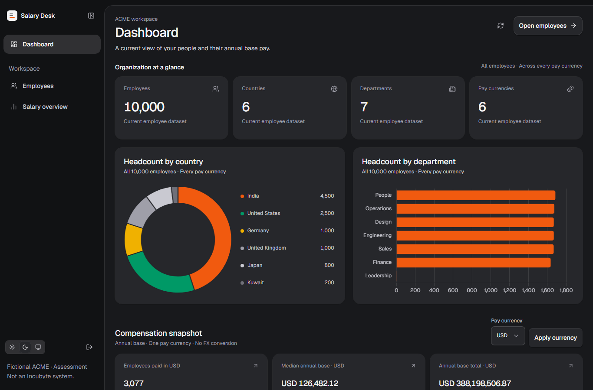
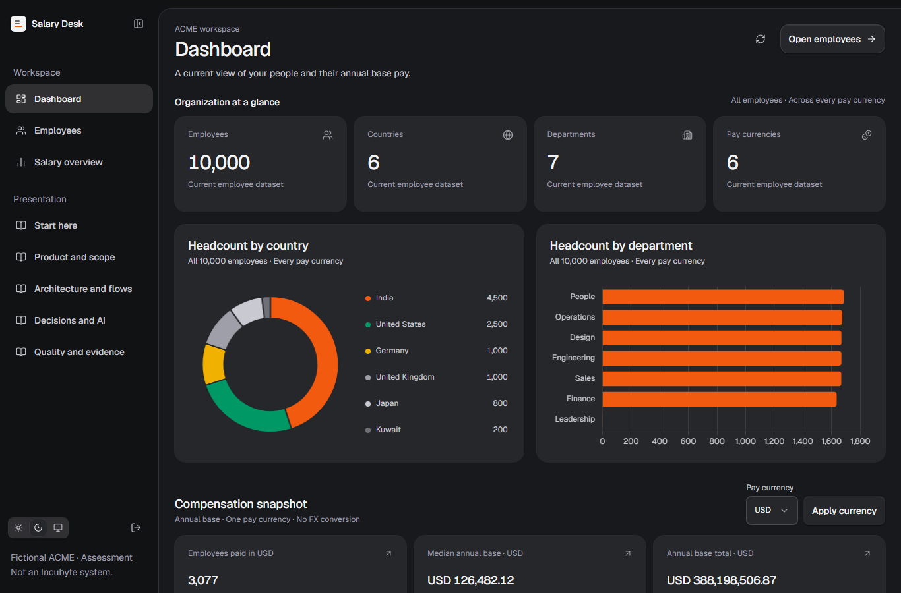
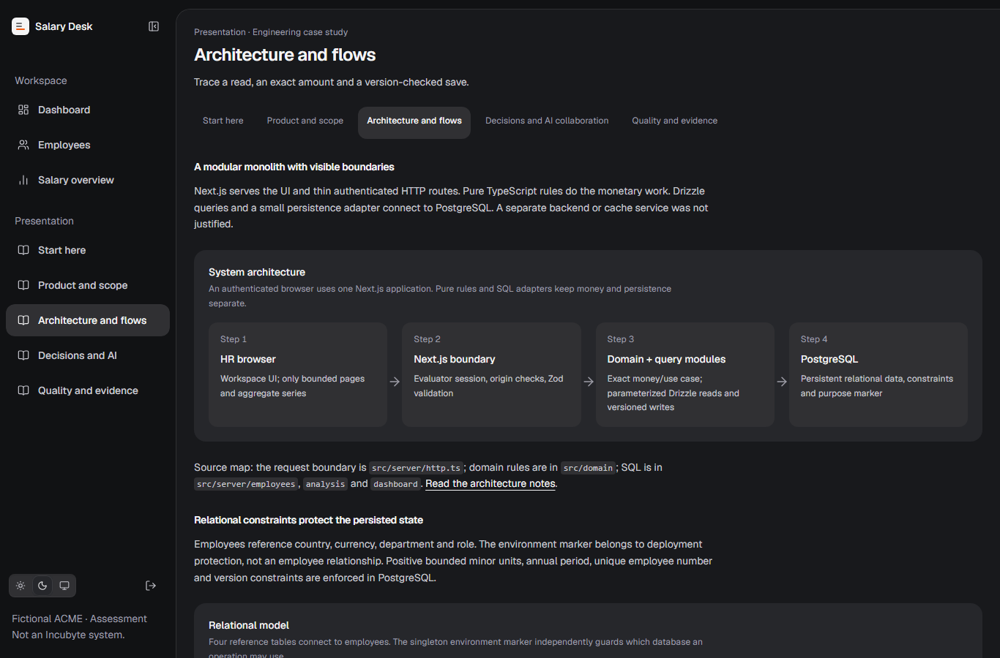
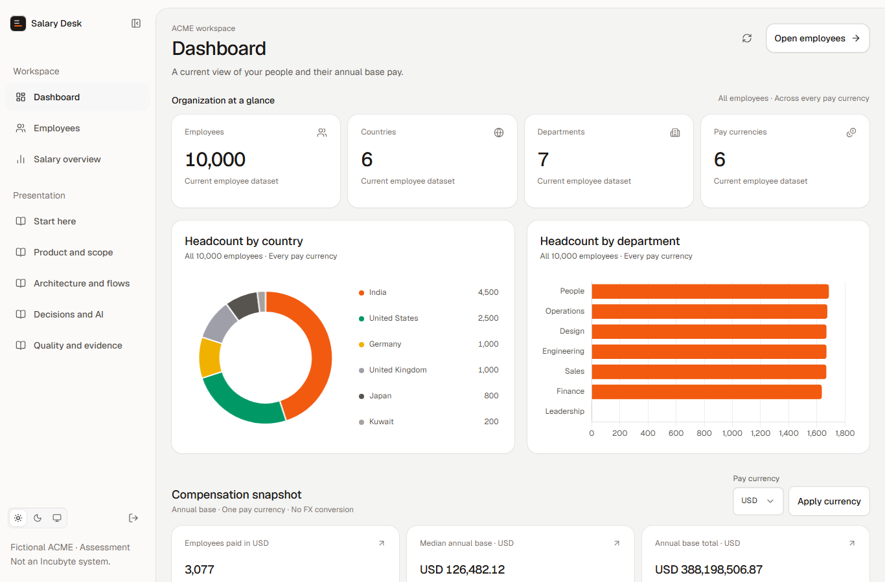
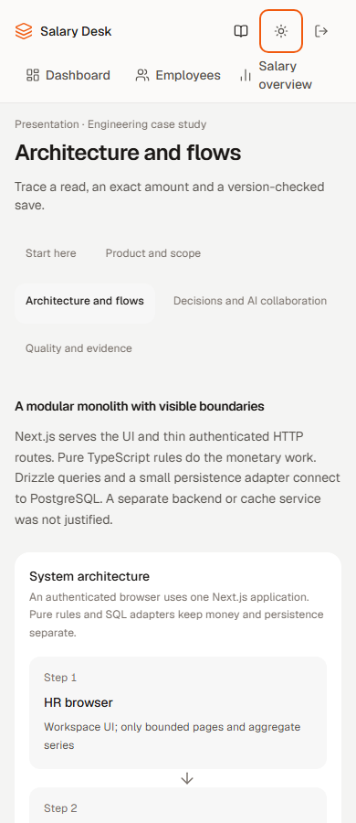
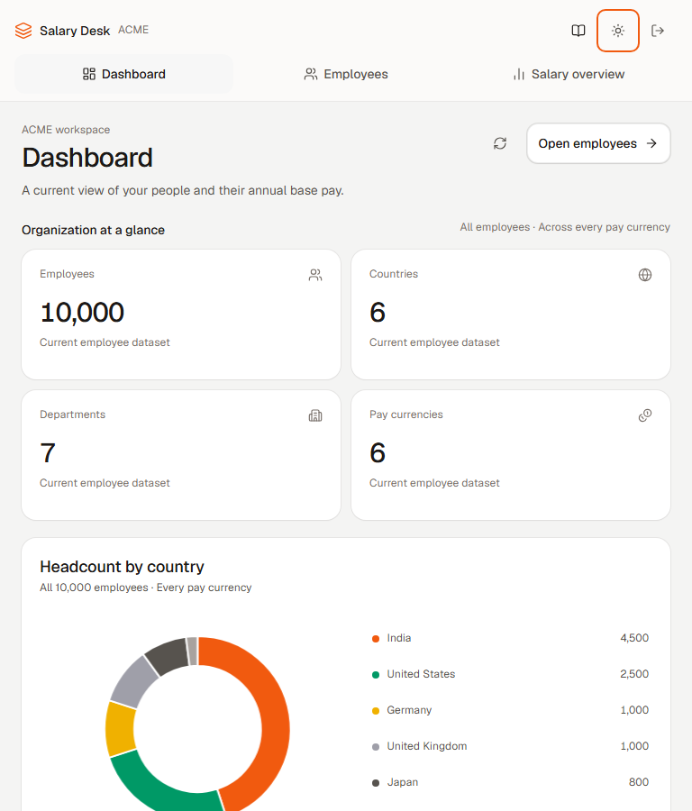

Salary Desk · final focused review
Local review only. Job Desk visual foundation preserved. No production deployment or source publication.
See protected Presentation and canonical final report. Screenshots show synthetic data; theme transitions were allowed to settle.
Dashboard: alignment and compact doughnut
Before this pass · ebcbd91 · selector/button top edges differed by 4px
After · aligned 44px controls, 208px doughnut, retained department chart
Chart lifecycle and measured reads
| Observation | Before | After |
|---|
| Contexts acquired per retained canvas after two real refresh intervals | 7 | 1 |
| Dashboard HTTP calls during those intervals | 2 | 2 (freshness preserved) |
| Employee response rows | 25 | 25 |
| Fresh Employees return, n=3 | 59–62ms | 56–60ms, zero API/SQL |
Small samples do not establish an SLA or a blanket speedup. Warm initial Dashboard was slower after the pass; the full report includes every sample, SQL execution and network limitations.
Presentation
Architecture · dark desktop
Dashboard · light desktop
Phone and tablet evidence
Presentation · light phone
Dashboard · light tablet
Access, exact money, complete populations, conflict protection and isolated tests remain in place. Final narrated video, candidate review, hosted review CI and release remain pending.